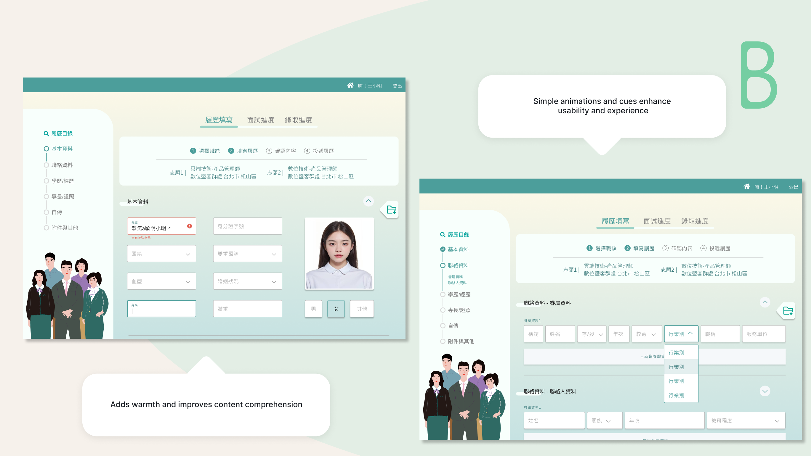
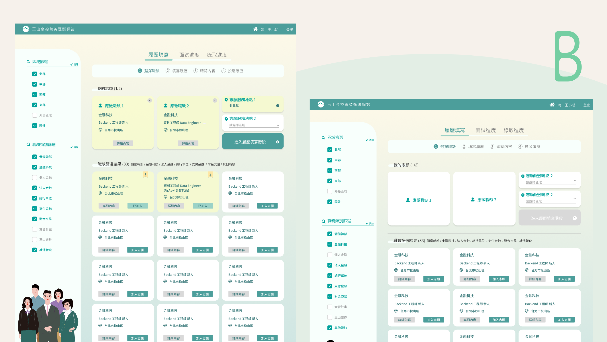
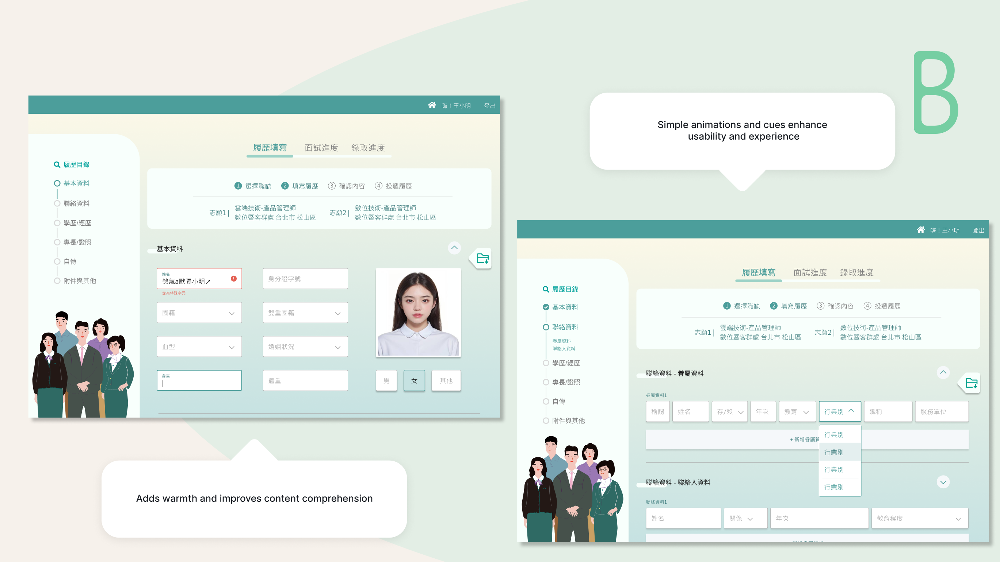
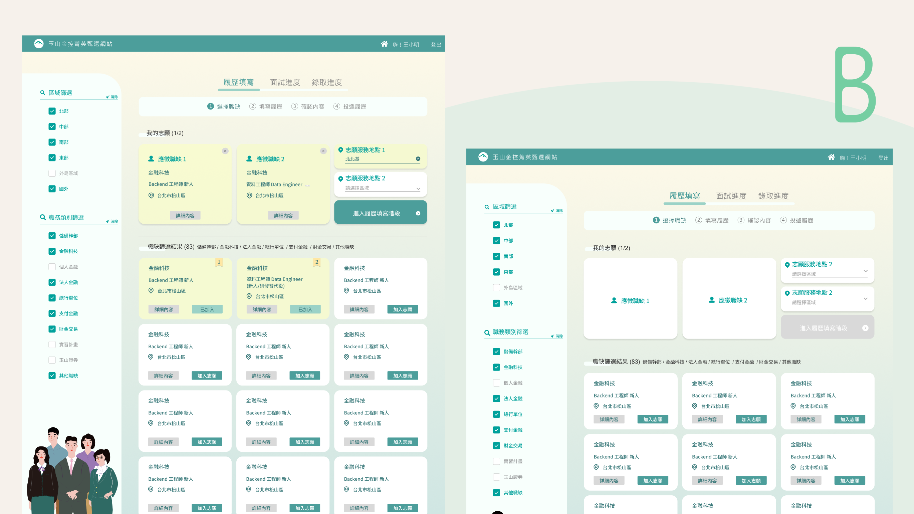

E.SUN Bank Careers Website
Explore career opportunities at E.SUN Bank – Internal HR Platform

Explore career opportunities at E.SUN Bank – Internal HR Platform
- Reduced candidate form drop-off rate by 30% -
- Cut down HR's manual workload by 40% -
- Revamped UI for a more intuitive and modern experience -
- Boosted candidate job search efficiency by 20% -
- Proposed the overall visual UI direction for the web interface -
- Built interactive prototypes and conducted usability testing -
- Analyzed data and compiled the usability test report -
- Implemented key frontend pages using HTML/CSS -
- Assisted the team in project scheduling and timeline coordination -
UX Prototype

UI Design
User Test
PM
-Seniors – Seek leadership roles; value fast search and efficient applications.-
-Juniors – Explore entry-level jobs; rely on guidance, filters, and learning info.-
-Interns – Prefer quick apply and simple flows; focus on internship details.-
-MAs – Apply for structured programs; need clear steps and progress tracking.-
Senior

Junior

Intern
MA
To meet diverse user needs, the webpage offers tailored experiences: first-time users are guided through resume setup and job recommendations to ease entry barriers, while returning users receive personalized job listings and real-time application updates to streamline their actions and boost engagement.


This frontend redesign refreshes outdated visuals and user flows. Building on the brand’s palette and design language, it introduces a cleaner, more modern look. UX elements adapt to screen needs, while a unified flow ensures clarity and efficiency.

A. Minimal Green Concept
A clean, streamlined style accented with subtle neon green creates a
modern, focused visual experience—ideal for emphasizing efficiency
and clarity in user flows.
B. Brand Continuity Concept
Extends the company’s existing scheduling-page style, pairing
familiar visual language with clear steps and illustrative graphics
to deliver an optimized yet recognizable experience.
C. Visual Renewal Concept
Uses a broader color palette and guided imagery to bring more
vibrancy and playfulness to the interface, delivering a refreshed
and engaging look and feel.
Use the tabs above to explore four sections: Login & Registration, Resume Completion, Interview Progress, and Assessments. Each tab contains screen previews and descriptions explaining the design decisions and key improvements for that stage.

This redesign combines the login/signup page with a welcoming interface. Besides maintaining a clear and straightforward process, it creates a focused and inviting atmosphere for users. To prevent users from abandoning registration due to lengthy form completion on a single page (as in the old system), we adopted a multi-page step-by-step flow. This segmented approach both reduces drop-offs and preserves the welcoming experience.
Considering that non-native job seekers previously lacked clear guidance on account setup, the new system includes explicit tooltip instructions to help users correctly enter their account numbers. Additionally, password creation now features clear prompts and security warnings to improve account safety and ease of use.

Candidates can select up to two roles in a cart-like flow. Location options show only when needed, making the process clear and efficient.
The resume page displays navigation and incomplete section alerts side by side, enabling users to quickly switch between sections and reducing the likelihood of drop-offs.

For roles needing pre-interview documents—like police records or credit checks—this page lists all requirements clearly and lets users upload everything in one place. It keeps the process simple, compliant, and efficient.
Interview updates are centralized, making it easy to reply, reschedule, or confirm—all in one place.
This dynamic assessment page handles aptitude, cognitive, and personality tests. Questions update automatically based on role or logic, giving candidates a smooth experience while saving HR time on setup and data handling.
To meet current and future test needs, this page adopts a modular design for questions. HR can quickly apply or edit templates, streamlining test creation. Users benefit from a consistent, smooth answering experience across various question types.


 


